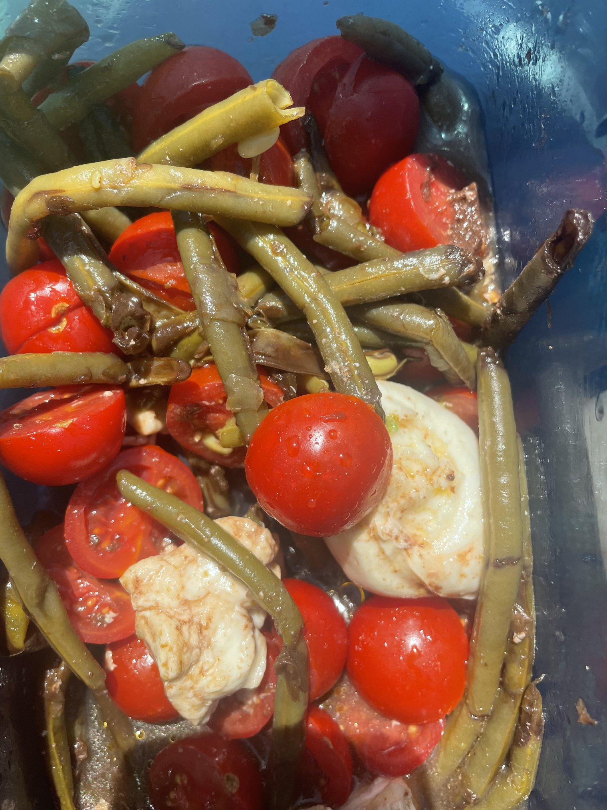

Ensalada de judías verdes, tomate cherry y burrata
Ingredientes
2×
- 300 g de judías verdes
- 200 g de tomates cherry
- ½ cebolla morada
- aceite de oliva
- vinagre balsámico
- sal
- pimentón
- 1 burrata

Preparación
Paso 1
Cocer 300 g de judías verdes 8min en agua con sal y enfriarlas.
Paso 2
Mezclar con 200 g de tomates cherry partidos y ½ cebolla morada en juliana.
Paso 3
Aliñar con aceite de oliva, vinagre balsámico, sal y pimentón, y añadir 1 burrata en trozos.
Resumen
300 g de judías verdes
Cocer enfriarlas
200 g de tomates cherry
½ cebolla morada
Mezclar
aceite de oliva
vinagre balsámico
sal
pimentón
1 burrata
Aliñar añadir